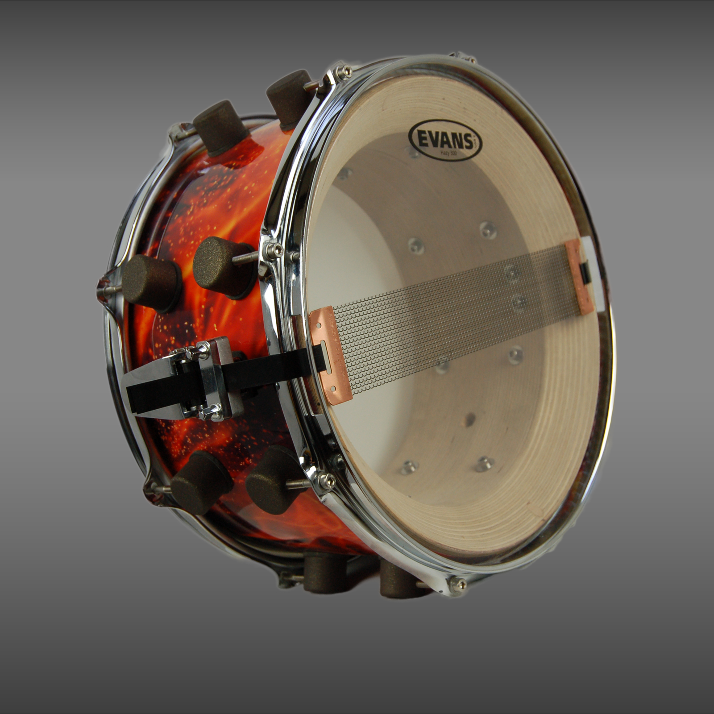

Snare
De snare is veel gebruikt slaginstrument in bijv. dweilband, waar ik dan ook in speel. Je ziet deze toepassing veel bij bijvooreeld carnaval maar ook in pop & rock muziek is de snare een belangrijk instrument.

Kenmerken
- snaren aan de onderkant
- Houten klankkast
- Bespeeld met drumstokken
- Kan op een standaar staan, maar ook om het middel van de slagwerker hangen
"Muziek kan de wereld veranderen, omdat hét mensen kan veranderen."